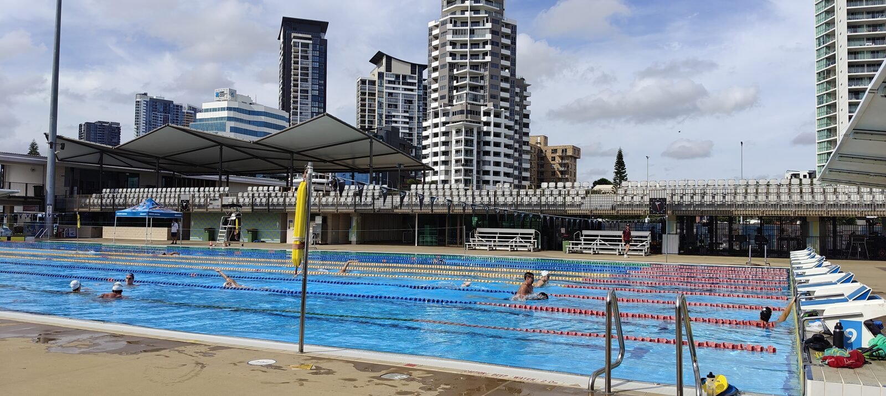

Hay momentos en los que sabes, antes incluso de que ocurran, que van a cambiar algo en ti. Subir a ese avión rumbo a Australia era uno de ellos. Lo que no sabía es hasta qué punto.
Mi primer destino fue Gold Coast. Una ciudad que para la mayoría del mundo es sinónimo de surf y playas infinitas, pero que para quien se mueve en el mundo de la natación tiene otro significado: es uno de los epicentros del talento acuático mundial. Y en el corazón de ese talento, en el Gold Coast Aquatic Centre, trabaja Melanie Marshall.

Gold Coast Aquatic Centre · Sesión matinal del grupo de Melanie Marshall
Si el nombre no te dice nada, te lo pongo en contexto: Melanie fue la entrenadora de Adam Peaty durante los años en que se convirtió en el mejor bracista de todos los tiempos. Récords mundiales, oro olímpico, dominancia absoluta durante casi una década. Melanie es británica, y tomó la decisión de viajar a Australia — al menos hasta Los Ángeles 2028 — para coger las riendas de un grupo de rendimiento ya consolidado en el Gold Coast Aquatic Centre. No llegó a construir algo desde cero: llegó a elevar lo que ya existía. Y lo que está haciendo es, sin exageración, uno de los entornos de entrenamiento más completos que he visto en mi vida.
"Un grupo con segundo entrenador, biomecánico, fisiólogo, preparador físico, fisioterapeuta, nutricionista y psicólogo. No como lujo, sino como parte del proceso normal de entrenamiento."
Cuando llegué al centro el primer día, no sabía muy bien qué esperar. Era un entrenador joven, español, recién llegado al otro lado del mundo. Melanie habría tenido motivos de sobra para tratarme como lo que era: un observador externo. No lo hizo. Desde el primer día me trató como a uno más del equipo. Me dirigía la palabra durante los entrenamientos, me preguntaba mi opinión, me permitió trabajar directamente con algunos deportistas. Esa confianza, viniendo de quien venía, fue algo que no olvidaré.
La semana que Adam Peaty apareció por el centro
Durante mi primera semana en Gold Coast, Adam Peaty estuvo de visita en el centro. Verle en persona, en el agua, en ese contexto, es una de esas experiencias difíciles de describir con palabras. No porque sea un ídolo inalcanzable — de hecho, es todo lo contrario — sino porque ves de cerca lo que hay detrás de la leyenda: trabajo, disciplina y una mentalidad que se percibe en cada gesto fuera del agua, no solo dentro de ella.
Aproveché cada sesión para observar, preguntar y absorber. La metodología de Melanie tiene una filosofía clara que, cuanto más la veía en acción, más sentido me hacía: el rendimiento máximo y el disfrute no son opuestos, son inseparables.
"Al contrario de lo que mucha gente cree del alto rendimiento, Melanie hacía el entrenamiento divertido. Y esa es precisamente la clave para sacar el máximo potencial y mantenerse en el tiempo."
El ambiente que generaba en el agua era de una concentración y una exigencia altísimas, pero nunca pesadas. Los deportistas llegaban cada mañana con ganas, no con obligación. Y eso, en el alto rendimiento, es más difícil de conseguir de lo que parece.

Con Mia O'Leary · Gold Coast Aquatic Centre · Australia
Las personas que te cambian sin saberlo
A lo largo de ese mes en Gold Coast, el centro se convirtió en mi segundo hogar. Y como en cualquier hogar, lo que más importa no son las instalaciones sino las personas. Entablé amistad con deportistas de perfiles completamente distintos: Mia O'Leary, bracista especializada en los 50 y 100 metros, con una capacidad de velocidad que impresiona en cada salida; Darragh Greene, bracista irlandés con una trayectoria olímpica que habla por sí sola; Nash Wilkes, bracista australiano al mismo nivel que Darragh, con ese temple que da haber competido en los grandes escenarios; y Enoch Robb, un chico más joven con un futuro enorme por delante, especializado en espalda en los 100 y 200 metros. Historias y recorridos muy diferentes, pero con algo en común: todos tenían muy claro por qué hacían lo que hacían.
Eso es algo que, desde fuera, el espectador no ve. Ve los tiempos, las medallas, los récords. Pero no ve las conversaciones antes del entrenamiento, la forma en que un deportista de élite gestiona un mal día, cómo procesa el dolor o la frustración. Esas conversaciones fueron, probablemente, lo más valioso que me llevé de Australia.
Lo que traje de vuelta
Hay una trampa en la que es fácil caer cuando visitas entornos de élite: pensar que lo que ves no es aplicable a tu realidad. Que los recursos, las instalaciones, los deportistas son tan distintos a los tuyos que lo aprendido se queda allí, en Australia, sin poder trasladarse.
No lo creo. Lo que más me llevé de Gold Coast no fue una serie de ejercicios ni un protocolo de entrenamiento. Fue una forma de entender el proceso: la convicción de que el entrenamiento tiene que tener sentido para quien lo hace, que la exigencia y el disfrute no se excluyen, y que un entrenador que confía en sus deportistas y les da autonomía obtiene de ellos más de lo que cualquier método por sí solo podría extraer.
Eso es trasladable. A un nadador de club, a un triatleta amateur, a alguien que empieza desde cero. La filosofía escala. Los recursos, no siempre. Pero la filosofía, siempre.
Australia fue un viaje enorme — en distancia, en tiempo y en lo que significó. Y dentro de ese viaje, Gold Coast fue el primer destino y el más importante. El lugar donde más aprendí, donde más me cuestioné y donde más creció mi manera de entender este deporte. Todo lo que vino después de ese mes lo viví con otra mirada.
¿Qué te ha parecido? Cuéntamelo en Instagram — @coachsergiordonez
Si quieres entrenar con una metodología que tenga sentido — para tu nivel, tus objetivos y tu vida — hablamos sin compromiso.
Empieza ahora